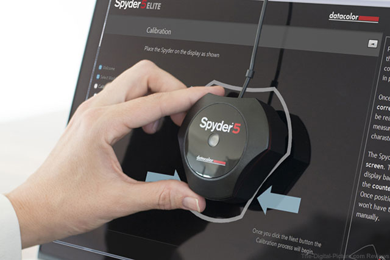
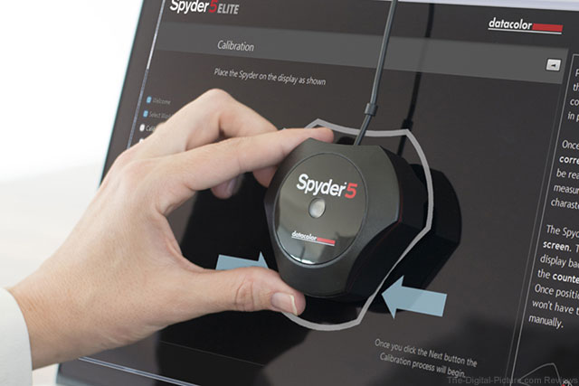

The 4 Cs model refers to a process for setting up and adjusting color reproduction equipment for the most accurate and consistent color, ensuring that each device performs at its best. The 4 Cs are depicted in a hierarchy where lower steps must be done first.
Cameras | Monitors | Proofers | Presses
- The monitor should be in a consistently illuminated environment, e.g., away from a window where the illumination could vary with the time of day.
- If the monitor has hardware controls for brightness and contrast, set to a pleasing levels.
- Alternatively the calibration program may also have targets to help you choose the optimum brightness and contrast.
Consistency
- Attach the colorimeter to the monitor and run the calibration program.
- The program will show the colorimeter various tone scales and color patches and simultaneously linearize and profile the monitor.
Calibration
- Save the monitor ICC profile that the calibration program creates.
- Set as the montior profile in System Settings > Display.
Characterization
- Photoshop and other programs will automatically read the monitor profile and set it as the destination profile for displayed images.